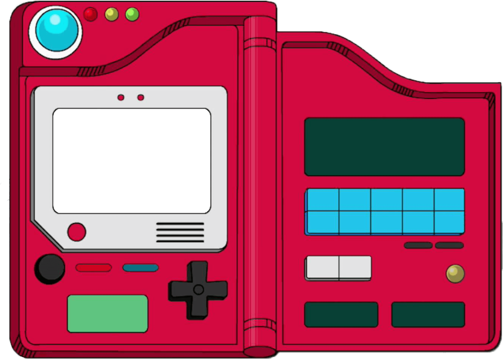

<mat-toolbar>
    

    
        &nbsp;
    

    <span></span>
    <button (click)="getPerfil()" mat-icon-button class="icon" aria-label="Example icon-button with menu icon">
        Perfil<mat-icon>menu</mat-icon>
      </button>
      

            


  </mat-toolbar>
  